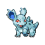

Назад
Нидорина
Нидорина — Покемон 1 поколения под номером 30 в Покедекс. Обитает он в регионе Канто и относится к Ядовитому типу. Когда Нидорина находится со своими друзьями или семьёй, они сдерживают свои колючки, чтобы не сделать друг другу больно. Этот Покемон нервничает, если его разлучить с другими.
Тип:
Ядовитый
Эволюция

# 030 Нидорина
=>
# 031 Нидоквин